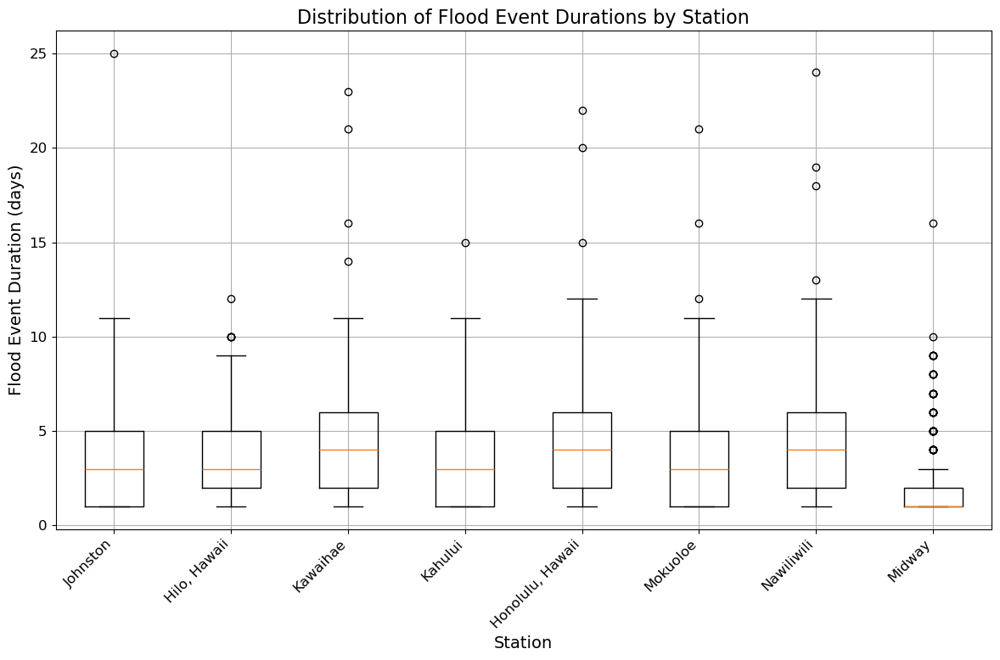

Flood Duration#
Tralala
%run setup.ipynb
data_dir = Path('../data' )
output_dir = Path('../output')
C:\Users\julia\anaconda3\envs\SLI39\lib\site-packages\pyproj\__init__.py:89: UserWarning: pyproj unable to set database path.
_pyproj_global_context_initialize()
hourly_data = xr.open_dataset(data_dir / 'SL_hourly_data.nc')
hourly_data.close()
---------------------------------------------------------------------------
KeyError Traceback (most recent call last)
File ~\anaconda3\envs\SLI39\lib\site-packages\xarray\backends\file_manager.py:211, in CachingFileManager._acquire_with_cache_info(self, needs_lock)
210 try:
--> 211 file = self._cache[self._key]
212 except KeyError:
File ~\anaconda3\envs\SLI39\lib\site-packages\xarray\backends\lru_cache.py:56, in LRUCache.__getitem__(self, key)
55 with self._lock:
---> 56 value = self._cache[key]
57 self._cache.move_to_end(key)
KeyError: [<class 'netCDF4._netCDF4.Dataset'>, ('C:\\Users\\julia\\Documents\\GitHub\\SL_Hawaii\\data\\SL_hourly_data.nc',), 'r', (('clobber', True), ('diskless', False), ('format', 'NETCDF4'), ('persist', False)), 'b2c619fd-58b2-4021-bee8-56514c219419']
During handling of the above exception, another exception occurred:
FileNotFoundError Traceback (most recent call last)
Cell In[2], line 1
----> 1 hourly_data = xr.open_dataset(data_dir / 'SL_hourly_data.nc')
2 hourly_data.close()
File ~\anaconda3\envs\SLI39\lib\site-packages\xarray\backends\api.py:571, in open_dataset(filename_or_obj, engine, chunks, cache, decode_cf, mask_and_scale, decode_times, decode_timedelta, use_cftime, concat_characters, decode_coords, drop_variables, inline_array, chunked_array_type, from_array_kwargs, backend_kwargs, **kwargs)
559 decoders = _resolve_decoders_kwargs(
560 decode_cf,
561 open_backend_dataset_parameters=backend.open_dataset_parameters,
(...)
567 decode_coords=decode_coords,
568 )
570 overwrite_encoded_chunks = kwargs.pop("overwrite_encoded_chunks", None)
--> 571 backend_ds = backend.open_dataset(
572 filename_or_obj,
573 drop_variables=drop_variables,
574 **decoders,
575 **kwargs,
576 )
577 ds = _dataset_from_backend_dataset(
578 backend_ds,
579 filename_or_obj,
(...)
589 **kwargs,
590 )
591 return ds
File ~\anaconda3\envs\SLI39\lib\site-packages\xarray\backends\netCDF4_.py:645, in NetCDF4BackendEntrypoint.open_dataset(self, filename_or_obj, mask_and_scale, decode_times, concat_characters, decode_coords, drop_variables, use_cftime, decode_timedelta, group, mode, format, clobber, diskless, persist, lock, autoclose)
624 def open_dataset( # type: ignore[override] # allow LSP violation, not supporting **kwargs
625 self,
626 filename_or_obj: str | os.PathLike[Any] | BufferedIOBase | AbstractDataStore,
(...)
642 autoclose=False,
643 ) -> Dataset:
644 filename_or_obj = _normalize_path(filename_or_obj)
--> 645 store = NetCDF4DataStore.open(
646 filename_or_obj,
647 mode=mode,
648 format=format,
649 group=group,
650 clobber=clobber,
651 diskless=diskless,
652 persist=persist,
653 lock=lock,
654 autoclose=autoclose,
655 )
657 store_entrypoint = StoreBackendEntrypoint()
658 with close_on_error(store):
File ~\anaconda3\envs\SLI39\lib\site-packages\xarray\backends\netCDF4_.py:408, in NetCDF4DataStore.open(cls, filename, mode, format, group, clobber, diskless, persist, lock, lock_maker, autoclose)
402 kwargs = dict(
403 clobber=clobber, diskless=diskless, persist=persist, format=format
404 )
405 manager = CachingFileManager(
406 netCDF4.Dataset, filename, mode=mode, kwargs=kwargs
407 )
--> 408 return cls(manager, group=group, mode=mode, lock=lock, autoclose=autoclose)
File ~\anaconda3\envs\SLI39\lib\site-packages\xarray\backends\netCDF4_.py:355, in NetCDF4DataStore.__init__(self, manager, group, mode, lock, autoclose)
353 self._group = group
354 self._mode = mode
--> 355 self.format = self.ds.data_model
356 self._filename = self.ds.filepath()
357 self.is_remote = is_remote_uri(self._filename)
File ~\anaconda3\envs\SLI39\lib\site-packages\xarray\backends\netCDF4_.py:417, in NetCDF4DataStore.ds(self)
415 @property
416 def ds(self):
--> 417 return self._acquire()
File ~\anaconda3\envs\SLI39\lib\site-packages\xarray\backends\netCDF4_.py:411, in NetCDF4DataStore._acquire(self, needs_lock)
410 def _acquire(self, needs_lock=True):
--> 411 with self._manager.acquire_context(needs_lock) as root:
412 ds = _nc4_require_group(root, self._group, self._mode)
413 return ds
File ~\anaconda3\envs\SLI39\lib\contextlib.py:119, in _GeneratorContextManager.__enter__(self)
117 del self.args, self.kwds, self.func
118 try:
--> 119 return next(self.gen)
120 except StopIteration:
121 raise RuntimeError("generator didn't yield") from None
File ~\anaconda3\envs\SLI39\lib\site-packages\xarray\backends\file_manager.py:199, in CachingFileManager.acquire_context(self, needs_lock)
196 @contextlib.contextmanager
197 def acquire_context(self, needs_lock=True):
198 """Context manager for acquiring a file."""
--> 199 file, cached = self._acquire_with_cache_info(needs_lock)
200 try:
201 yield file
File ~\anaconda3\envs\SLI39\lib\site-packages\xarray\backends\file_manager.py:217, in CachingFileManager._acquire_with_cache_info(self, needs_lock)
215 kwargs = kwargs.copy()
216 kwargs["mode"] = self._mode
--> 217 file = self._opener(*self._args, **kwargs)
218 if self._mode == "w":
219 # ensure file doesn't get overridden when opened again
220 self._mode = "a"
File src\\netCDF4\\_netCDF4.pyx:2470, in netCDF4._netCDF4.Dataset.__init__()
File src\\netCDF4\\_netCDF4.pyx:2107, in netCDF4._netCDF4._ensure_nc_success()
FileNotFoundError: [Errno 2] No such file or directory: 'C:\\Users\\julia\\Documents\\GitHub\\SL_Hawaii\\data\\SL_hourly_data.nc'
hourly_data
<xarray.Dataset> Size: 40MB
Dimensions: (time: 359377, record_id: 8)
Coordinates:
* time (time) datetime64[ns] 3MB 1983-01-01 ... 2023-12-31
* record_id (record_id) int64 64B 52 60 552 59 57 61 58 50
Data variables: (12/14)
sea_level (record_id, time) float32 12MB ...
lat (record_id) float32 32B ...
lon (record_id) float32 32B ...
station_name (record_id) <U16 512B ...
station_country (record_id) <U30 960B ...
station_country_code (record_id) float32 32B ...
... ...
ssc_id (record_id) <U4 128B ...
last_rq_date (record_id) datetime64[ns] 64B ...
MHHW (record_id) float64 64B ...
MSL (record_id) float64 64B ...
sea_level_MHHW (record_id, time) float64 23MB ...
year_storm (time) int64 3MB ...
Attributes:
title: UHSLC Fast Delivery Tide Gauge Data (hourly)
ncei_template_version: NCEI_NetCDF_TimeSeries_Orthogonal_Template_v2.0
featureType: timeSeries
Conventions: CF-1.6, ACDD-1.3
date_created: 2024-08-19T14:27:33Z
publisher_name: University of Hawaii Sea Level Center (UHSLC)
publisher_email: philiprt@hawaii.edu, markm@soest.hawaii.edu
publisher_url: http://uhslc.soest.hawaii.edu
summary: The UHSLC assembles and distributes the Fast Deli...
processing_level: Fast Delivery (FD) data undergo a level 1 quality...
acknowledgment: The UHSLC Fast Delivery database is supported by ...# load the data
SL_daily_max = xr.open_dataset(data_dir / 'SL_daily_max.nc')
SL_daily_max.close()
SL_daily_max
<xarray.Dataset> Size: 2MB
Dimensions: (record_id: 8, time: 14975)
Coordinates:
* record_id (record_id) int64 64B 52 60 552 59 57 61 58 50
* time (time) datetime64[ns] 120kB 1983-01-01 ... 2023-12-31
Data variables: (12/15)
sea_level (time, record_id) float32 479kB ...
lat (record_id) float32 32B ...
lon (record_id) float32 32B ...
station_name (record_id) <U16 512B ...
station_country (record_id) <U30 960B ...
station_country_code (record_id) float32 32B ...
... ...
last_rq_date (record_id) datetime64[ns] 64B ...
MHHW (record_id) float64 64B ...
MSL (record_id) float64 64B ...
sea_level_MHHW (time, record_id) float64 958kB ...
year_storm (time) int64 120kB ...
flood_day (time, record_id) bool 120kB ...
Attributes:
title: UHSLC Fast Delivery Tide Gauge Data (hourly)
ncei_template_version: NCEI_NetCDF_TimeSeries_Orthogonal_Template_v2.0
featureType: timeSeries
Conventions: CF-1.6, ACDD-1.3
date_created: 2024-08-19T14:27:33Z
publisher_name: University of Hawaii Sea Level Center (UHSLC)
publisher_email: philiprt@hawaii.edu, markm@soest.hawaii.edu
publisher_url: http://uhslc.soest.hawaii.edu
summary: The UHSLC assembles and distributes the Fast Deli...
processing_level: Fast Delivery (FD) data undergo a level 1 quality...
acknowledgment: The UHSLC Fast Delivery database is supported by ...# Extracting the necessary data
flood_day = SL_daily_max['flood_day']
time = SL_daily_max['time']
station_names = SL_daily_max['station_name'].values
# Convert time to pandas datetime
time = pd.to_datetime(time.values)
# Initialize a dictionary to hold results
flood_events = {}
# Loop through each station
for i, station in enumerate(station_names):
station_flood_days = flood_day[:, i].values
station_flood_days = pd.Series(station_flood_days, index=time)
# Group by year
station_flood_days_by_year = station_flood_days.groupby(station_flood_days.index.year)
# Initialize list to hold all events for this station
station_events = []
for year, data in station_flood_days_by_year:
flood_event_durations = []
current_event_length = 0
for day in data:
if day:
current_event_length += 1
else:
if current_event_length > 0:
flood_event_durations.append(current_event_length)
current_event_length = 0
# Append the last event if it was ongoing at the end of the year
if current_event_length > 0:
flood_event_durations.append(current_event_length)
# Store the events for this year
station_events.append({
"year": year,
"events": flood_event_durations
})
# Store the results for the station
flood_events[station] = station_events
# Example of how the corrected data looks for one station
flood_events[list(flood_events.keys())[0]]
[{'year': 1983, 'events': [3, 2, 3, 5, 5, 3, 4, 4, 3, 4, 1]},
{'year': 1984, 'events': [1, 5, 2, 2, 1, 1, 2, 5, 2, 5, 1, 5, 1, 3]},
{'year': 1985, 'events': [1, 1, 3, 3, 3, 3]},
{'year': 1986, 'events': [1, 2, 4, 3, 1, 1, 3]},
{'year': 1987, 'events': [1, 1, 2, 1, 1, 5, 1]},
{'year': 1988, 'events': [1, 1, 8, 5, 1, 6, 5, 6, 6, 1, 3, 5, 2, 3]},
{'year': 1989, 'events': [1, 1, 5, 1, 1, 3, 1, 2, 6, 1]},
{'year': 1990, 'events': [1, 2, 2, 1, 2, 2, 1, 1]},
{'year': 1991, 'events': [1, 1, 4, 4, 1]},
{'year': 1992, 'events': [1, 1, 2, 3, 3, 5, 4, 5, 2, 2, 1, 4]},
{'year': 1993, 'events': [1, 2, 4, 2, 3, 3, 1, 2, 1]},
{'year': 1994, 'events': [2, 1, 3, 1, 8, 3, 5, 1]},
{'year': 1995, 'events': [1, 2, 6, 1, 1, 2, 7, 2, 1, 1, 4, 1, 1, 1]},
{'year': 1996, 'events': [5, 3, 1, 6, 1, 1, 2, 2, 6, 7, 1, 4, 1, 9]},
{'year': 1997, 'events': [7, 6, 1, 1, 1, 5]},
{'year': 1998, 'events': [1, 3, 3, 2, 1, 1, 2, 3, 4, 4, 1, 3, 2]},
{'year': 1999, 'events': [3, 1, 1, 1, 1, 1, 3, 9, 1, 1]},
{'year': 2000, 'events': [2, 1, 1]},
{'year': 2001, 'events': [1, 1, 3, 2, 4, 1, 6, 5, 6, 5, 1, 1, 5, 1, 2]},
{'year': 2002, 'events': [1, 4, 1, 5, 1, 1, 5, 1, 1, 3, 2, 1, 1]},
{'year': 2003, 'events': [6, 1, 1, 3, 2, 4, 1, 1, 6, 1, 4, 4, 5, 7, 4, 4]},
{'year': 2004, 'events': [1, 2, 5, 2, 1, 1, 5, 4, 2]},
{'year': 2005, 'events': []},
{'year': 2006, 'events': []},
{'year': 2007, 'events': []},
{'year': 2008, 'events': [2, 3, 5, 1, 5, 3, 6]},
{'year': 2009, 'events': [1, 2, 1]},
{'year': 2010, 'events': [2, 2, 1, 1, 5, 5, 2, 7, 25, 4]},
{'year': 2011, 'events': [1, 1, 1, 2, 2, 5, 7, 11, 7, 7, 8, 7, 1, 3]},
{'year': 2012, 'events': [2, 6, 1, 7, 9, 6]},
{'year': 2013, 'events': [1, 2, 1, 5, 5, 6, 6, 5, 4, 4, 1, 1]},
{'year': 2014, 'events': [2, 3, 1, 5, 5, 4]},
{'year': 2015, 'events': [4, 2, 4, 4, 7, 3, 5, 2, 1]},
{'year': 2016, 'events': [1, 6, 5, 1, 6, 7, 7, 1, 6, 8, 10, 10, 1]},
{'year': 2017,
'events': [4, 1, 3, 10, 10, 8, 4, 5, 7, 1, 2, 6, 7, 8, 2, 2, 4]},
{'year': 2018, 'events': [7, 5, 4, 1, 5, 2, 5, 2]},
{'year': 2019, 'events': [1, 2, 4, 5, 3, 2, 7, 1, 5, 5, 1]},
{'year': 2020, 'events': [2, 1, 1, 2, 8, 4, 4, 3, 6, 1, 6, 1, 2, 1, 5]},
{'year': 2021, 'events': [2, 7, 4, 2, 2, 3, 1, 3, 4, 4, 3, 4, 7, 4, 5, 1, 2]},
{'year': 2022, 'events': [6, 5, 1, 3, 3, 4, 2, 8]},
{'year': 2023, 'events': [1, 5, 1, 1, 3, 3, 7, 5, 5, 5, 7, 9, 1, 8, 6]}]
# Prepare data for box plot
station_names = list(flood_events.keys())
all_durations = []
# Collecting all durations for each station
for station in station_names:
station_durations = []
for year_data in flood_events[station]:
station_durations.extend(year_data["events"])
all_durations.append(station_durations)
# Plotting
plt.figure(figsize=(12, 8))
plt.boxplot(all_durations, labels=station_names, vert=True)
plt.title('Distribution of Flood Event Durations by Station')
plt.xlabel('Station')
plt.ylabel('Flood Event Duration (days)')
plt.xticks(rotation=45, ha='right')
plt.grid(True)
plt.tight_layout()
plt.show()

# Setting up the plot grid again with larger station names
# Determine unique years in the dataset
years = sorted(set(year_data["year"] for station_events in flood_events.values() for year_data in station_events))
# Setting up the plot grid
num_stations = len(station_names)
# Determine the 5-year intervals for labeling
five_year_ticks = [year for year in years if year % 5 == 0]
# Setting up the plot grid again with individual subplots and station names inside the plots
fig, axes = plt.subplots(nrows=num_stations, ncols=1, figsize=(6, 10), sharex=True)
# Plotting for each station
for ax, station in zip(axes, station_names):
yearly_durations = {year: [] for year in years}
# Populate the yearly durations
for year_data in flood_events[station]:
year = year_data["year"]
yearly_durations[year].extend(year_data["events"])
# Prepare data for boxplot
boxplot_data = [yearly_durations[year] for year in years]
# Create the boxplot
ax.boxplot(
boxplot_data,
positions=range(len(years)),
patch_artist=True,
boxprops=dict(facecolor='lightblue', color='blue', alpha=0.7),
medianprops=dict(color='red'),
whiskerprops=dict(color='blue', alpha=0.5),
capprops=dict(color='blue', alpha=0.5)
)
# Add station name inside the plot
ax.text(2, ax.get_ylim()[1] * 0.8, station, fontsize=12, ha='left', color='black')
ax.set_ylabel('Duration (days)', fontsize=10)
ax.grid(False)
# Clean up and remove x-axis labels from all but the last subplot
for ax in axes[:-1]:
ax.set_xticks([])
# Set x-ticks and labels for every 5 years
axes[-1].set_xticks([years.index(year) for year in five_year_ticks])
axes[-1].set_xticklabels(five_year_ticks, ha='right')
axes[-1].set_xlabel('Year', fontsize=12)
Text(0.5, 0, 'Year')
# Loop through each sensor column
for column in flood_hour_df.columns:
flood_duration_day[column] = []
# Find the indices where flooding starts and ends
flood_events = df_flood[column].ne(df_flood[column].shift()).cumsum()
# Group by the flood event indices, filtering out False events
for event_id, group in df_flood.groupby(flood_events):
if group[column].iloc[0]: # Only consider True (flood) events
start_time = group.index.min()
end_time = group.index.max()
duration = end_time - start_time
# round to nearest hour
duration = np.round(duration.total_seconds() / 3600) + 1
flood_durations[column].append((start_time, duration))
height = flood_data_df.loc[start_time:end_time, column].max() # max height
flood_heights[column].append((start_time, height))
# flood_hour = (hourly_data.sea_level_MHHW.values > thresholds[:,None])
flood_hour = (hourly_data.sea_level_MHHW.values > 30)
flood_hour
flood_hour = np.transpose(flood_hour)
# turn flood_hour into a pandas dataframe with time as index and station as columns
flood_hour_df = pd.DataFrame(flood_hour, index = hourly_data.time.values, columns = hourly_data.record_id.values)
flood_hour_df
| 52 | 60 | 552 | 59 | 57 | 61 | 58 | 50 | |
|---|---|---|---|---|---|---|---|---|
| 1983-01-01 00:00:00.000000 | False | False | False | False | False | False | False | False |
| 1983-01-01 01:00:00.028800 | False | False | False | False | False | False | False | False |
| 1983-01-01 01:59:59.971200 | False | False | False | False | False | False | False | False |
| 1983-01-01 03:00:00.000000 | False | False | False | False | False | False | False | False |
| 1983-01-01 04:00:00.028800 | False | False | False | False | False | False | False | False |
| ... | ... | ... | ... | ... | ... | ... | ... | ... |
| 2023-12-30 19:59:59.971200 | False | False | False | False | False | False | False | False |
| 2023-12-30 21:00:00.000000 | False | False | False | False | False | False | False | False |
| 2023-12-30 22:00:00.028800 | False | False | False | False | False | False | False | False |
| 2023-12-30 22:59:59.971200 | False | False | False | False | False | False | False | False |
| 2023-12-31 00:00:00.000000 | False | False | False | False | False | False | False | False |
359377 rows × 8 columns
# get sea level data where flood_hour is True
flood_data = hourly_data.sea_level_MHHW.where(flood_hour.T)
flood_data_df = pd.DataFrame(flood_data.T-30, index = hourly_data.time.values, columns = hourly_data.record_id.values)
flood_data_df
| 52 | 60 | 552 | 59 | 57 | 61 | 58 | 50 | |
|---|---|---|---|---|---|---|---|---|
| 1983-01-01 00:00:00.000000 | NaN | NaN | NaN | NaN | NaN | NaN | NaN | NaN |
| 1983-01-01 01:00:00.028800 | NaN | NaN | NaN | NaN | NaN | NaN | NaN | NaN |
| 1983-01-01 01:59:59.971200 | NaN | NaN | NaN | NaN | NaN | NaN | NaN | NaN |
| 1983-01-01 03:00:00.000000 | NaN | NaN | NaN | NaN | NaN | NaN | NaN | NaN |
| 1983-01-01 04:00:00.028800 | NaN | NaN | NaN | NaN | NaN | NaN | NaN | NaN |
| ... | ... | ... | ... | ... | ... | ... | ... | ... |
| 2023-12-30 19:59:59.971200 | NaN | NaN | NaN | NaN | NaN | NaN | NaN | NaN |
| 2023-12-30 21:00:00.000000 | NaN | NaN | NaN | NaN | NaN | NaN | NaN | NaN |
| 2023-12-30 22:00:00.028800 | NaN | NaN | NaN | NaN | NaN | NaN | NaN | NaN |
| 2023-12-30 22:59:59.971200 | NaN | NaN | NaN | NaN | NaN | NaN | NaN | NaN |
| 2023-12-31 00:00:00.000000 | NaN | NaN | NaN | NaN | NaN | NaN | NaN | NaN |
359377 rows × 8 columns
# Find indices of flood events, and the duration of each event for record id = 57
# Initialize a dictionary to store the durations
flood_durations = {}
flood_heights = {}
df_flood = flood_hour_df
# Loop through each sensor column
for column in flood_hour_df.columns:
flood_durations[column] = []
flood_heights[column] = []
# Find the indices where flooding starts and ends
flood_events = df_flood[column].ne(df_flood[column].shift()).cumsum()
# Group by the flood event indices, filtering out False events
for event_id, group in df_flood.groupby(flood_events):
if group[column].iloc[0]: # Only consider True (flood) events
start_time = group.index.min()
end_time = group.index.max()
duration = end_time - start_time
# round to nearest hour
duration = np.round(duration.total_seconds() / 3600) + 1
flood_durations[column].append((start_time, duration))
height = flood_data_df.loc[start_time:end_time, column].max() # max height
flood_heights[column].append((start_time, height))
# make dataframe from dictionary
# Assuming flood_durations and hourly_data are already defined
# Initialize an empty list to store DataArrays
data_arrays = []
# Loop through each record_id and create a DataArray
for record_id in hourly_data.record_id.values:
flood_durations_df = pd.DataFrame(flood_durations[record_id])
flood_durations_df.columns = ['time', 'duration']
flood_heights_df = pd.DataFrame(flood_heights[record_id])
flood_heights_df.columns = ['time', 'height']
# Merge the two DataFrames on 'time'
merged_df = pd.merge(flood_durations_df, flood_heights_df, on='time')
# Create a DataArray with both 'duration' and 'height'
flood_data_da = xr.DataArray(
merged_df[['duration', 'height']].values,
dims=['time', 'variable'],
coords={'time': merged_df.time.values, 'variable': ['duration', 'height'], 'record_id': record_id}
)
data_arrays.append(flood_data_da)
# Combine all DataArrays into a single Dataset
flood_data_ds = xr.concat(data_arrays, dim='record_id')
# Convert to Dataset
flood_data_ds = flood_data_ds.to_dataset(dim='variable')
flood_data_ds
<xarray.Dataset> Size: 310kB
Dimensions: (record_id: 8, time: 2277)
Coordinates:
* time (time) datetime64[ns] 18kB 1983-01-01T15:00:00 ... 2023-12-25T...
* record_id (record_id) int64 64B 52 60 552 59 57 61 58 50
Data variables:
duration (record_id, time) float64 146kB nan nan nan nan ... nan nan nan
height (record_id, time) float64 146kB nan nan nan nan ... nan nan nan# make storm time by shifting time by 4 months, such that May 1st is the start of the storm season
# Convert the time values to pandas DatetimeIndex
time_values = pd.to_datetime(flood_data_ds.time.values)
# Jan 1 should be the equivalent of May 1
shifted_time_values = time_values + pd.DateOffset(months=4)
#remove anything in 1982
shifted_time_values = shifted_time_values[shifted_time_values.year != 1982]
# Assign the shifted time values back to the dataset
flood_data_ds['time'] = shifted_time_values
flood_data_ds
<xarray.Dataset> Size: 310kB
Dimensions: (record_id: 8, time: 2277)
Coordinates:
* time (time) datetime64[ns] 18kB 1983-05-01T15:00:00 ... 2024-04-25T...
* record_id (record_id) int64 64B 52 60 552 59 57 61 58 50
Data variables:
duration (record_id, time) float64 146kB nan nan nan nan ... nan nan nan
height (record_id, time) float64 146kB nan nan nan nan ... nan nan nan# scatterplot flood duration vs year
from matplotlib.colors import LinearSegmentedColormap
# make figure size small
plt.figure(figsize=(10,4))
# Create a custom color ramp and exclude the lightest shade
full_palette = sns.color_palette("Blues", n_colors=256)
# adjusted_heatmap_palette = full_palette[50:] # Skip the lightest 50 shades
# Convert the adjusted palette to a colormap
# custom_palette = LinearSegmentedColormap.from_list("custom_blues", adjusted_heatmap_palette)
custom_palette = sns.color_palette("OrRd", as_cmap=True)
# selected_data['duration'] = selected_data['duration'].astype(float)
# flood_durations_ds['month'] = flood_durations_ds['month'].astype(float)
record_ids = flood_data_ds['record_id'].values
station_names = hourly_data['station_name'].sel(record_id=record_ids).values
for i, record_id in enumerate(record_ids):
# Select data for the current record_id and drop NaNs
selected_data = flood_data_ds.sel(record_id=record_id).dropna(dim='time')
# Ensure 'duration' is numeric
selected_data['duration'] = selected_data['duration'].astype(float)
# Plot each station's data on a different y-coordinate
scatter = plt.scatter(selected_data['time'], [i + 1] * len(selected_data['time']), s=10 * selected_data['duration'], c=selected_data['height'], cmap=custom_palette)
plt.xlabel('Time')
plt.yticks(range(1, len(record_ids) + 1), hourly_data['station_name'].sel(record_id=record_ids).values) # Set y-ticks to show station labels
plt.colorbar(scatter, label='Max height \nabove threshold (cm)')
# show the colorbar
<matplotlib.colorbar.Colorbar at 0x3221c3fa0>
# turn this duration and height into 'flooding intensity' by multiplying the two
flood_data_ds['intensity'] = flood_data_ds['duration'] * flood_data_ds['height']
# make pcolormesh plot
plt.figure(figsize=(8,2))
sns.heatmap(flood_data_ds.pivot_table(index='time', columns='record_id', values='duration', aggfunc='mean'), cmap='Blues')
---------------------------------------------------------------------------
AttributeError Traceback (most recent call last)
Cell In[114], line 3
1 # make pcolormesh plot
2 plt.figure(figsize=(8,2))
----> 3 sns.heatmap(flood_data_ds.pivot_table(index='time', columns='record_id', values='duration', aggfunc='mean'), cmap='Blues')
File /opt/anaconda3/envs/SLI39/lib/python3.9/site-packages/xarray/core/common.py:285, in AttrAccessMixin.__getattr__(self, name)
283 with suppress(KeyError):
284 return source[name]
--> 285 raise AttributeError(
286 f"{type(self).__name__!r} object has no attribute {name!r}"
287 )
AttributeError: 'Dataset' object has no attribute 'pivot_table'
<Figure size 800x200 with 0 Axes>
flood_durations_ds['month'] = flood_durations_ds['month'].astype(float)
# Now plot
flood_durations_ds.sel(record_id=57).plot.scatter(x='time', y='month', size='duration', color=adjusted_heatmap_palette[0], s=10)
flood_durations_ds['month'] = flood_durations_ds['month'].astype(float)
# Now plot
flood_durations_ds.sel(record_id=57).plot.scatter(x='time', y='month', size='duration', color=adjusted_heatmap_palette[0], s=10)
# make dataframe of flood durations
flood_durations_df = pd.DataFrame(flood_durations[57], columns = ['start_time', 'end_time', 'duration'])
# remove rows with duration = 0
flood_durations_df = flood_durations_df[flood_durations_df.duration != 0]
# group by year
flood_durations_df['year'] = flood_durations_df.start_time.dt.year
flood_durations_df['month'] = flood_durations_df.start_time.dt.month
# summary statistics, average duration of flood events by year
year_median = flood_durations_df.groupby('year').duration.median()
year_mean = flood_durations_df.groupby('year').duration.mean()
year_max = flood_durations_df.groupby('year').duration.max()
year_summary = pd.DataFrame({'median': year_median, 'mean': year_mean, 'max': year_max})
# summary statistics, average duration of flood events by month
month_median = flood_durations_df.groupby('month').duration.median()
month_mean = flood_durations_df.groupby('month').duration.mean()
month_max = flood_durations_df.groupby('month').duration.max()
month_summary = pd.DataFrame({'median': month_median, 'mean': month_mean, 'max': month_max})
# plt.scatter(year_summary.index, year_summary['mean'], label = 'mean')
# plt.scatter(year_summary.index, year_summary['median'], label = 'median')
# plt.plot(year_summary.index, year_summary['max'], label = 'max')
# make whisker plot of flood event durations by year
plt.figure(figsize = (15, 5))
sns.boxplot(data = flood_durations_df, x = 'month', y = 'duration')
plt.title('Flood event durations by month')
plt.show()
/Users/juliafiedler/anaconda3/envs/SLI39/lib/python3.9/site-packages/seaborn/categorical.py:632: FutureWarning: SeriesGroupBy.grouper is deprecated and will be removed in a future version of pandas.
positions = grouped.grouper.result_index.to_numpy(dtype=float)

# plot flood events by month and duration
plt.figure()
# plt.plot(month_summary.index, month_summary['mean'], label = 'mean')
plt.scatter(flood_durations_df.month, flood_durations_df.duration, color = 'blue')
<matplotlib.collections.PathCollection at 0x15a7cfac0>
# sum flood_hour_df by day
flood_hours_in_day_df = flood_hour_df.resample('D').sum()
flood_hours_in_day_df
flood_hours_in_day_df_57 = flood_hours_in_day_df[57]
flood_hours_in_day_df_57
1983-01-01 0
1983-01-02 0
1983-01-03 0
1983-01-04 0
1983-01-05 0
..
2023-12-27 0
2023-12-28 0
2023-12-29 0
2023-12-30 0
2023-12-31 0
Freq: D, Name: 57, Length: 14975, dtype: int64
There will be more. This is a placeholder.